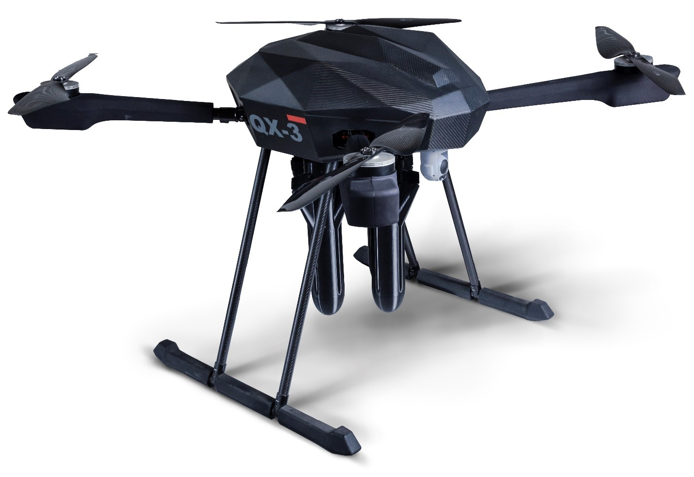

FIELD UNIT / COMPONENT VIEW3 of 3 connections enabled

ROBOT 01 FIELD UNIT
Camera
TEST SOURCERecorded video → Station
Waiting for received videoSensors
TEST SOURCESimulated yaw / pitch → Station
Waiting for received sensor dataWi-Fi
RTT profile 10 msUplink cap 6 Mbps
Simulated Wi-Fi role
Mobile
RTT profile 20 msUplink cap 4 Mbps
Simulated mobile role
Satellite
RTT profile 60 msUplink cap 1.4 Mbps
Simulated satellite role
Path enabled Path cutTest data sources · read only. Path switches control kernel simulation.